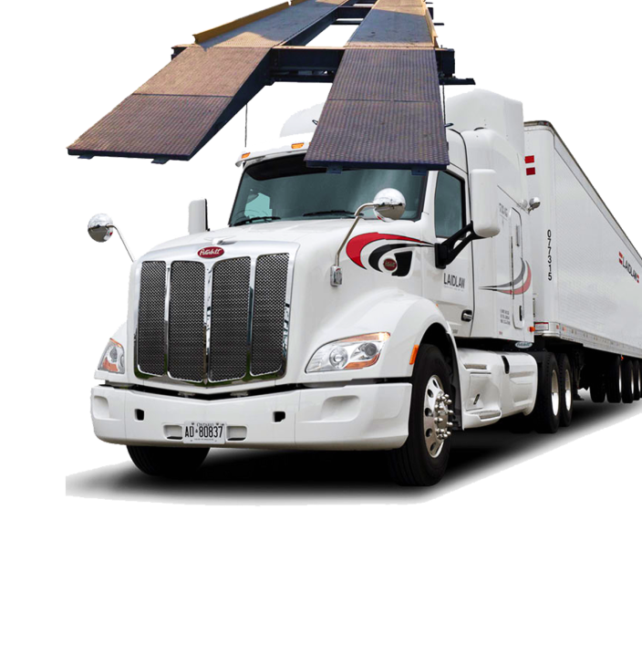

تولید و فروش انواع باسکول
تولید و فروش انواع باسکول
باسکول های وزن کشی را می توان با توجه به محل نصب، درخواست مشتری و....
شماره تماس برای استعلام قیمت....
یکی از لوازم و وسایلی که برای وزن کردن اجسام، دام و....
درباره ما
باسکول های وزن کشی را می توان با توجه به محل نصب، درخواست مشتری و دیگر فاکتورها به صورت پیش ساخته یا غیر پیش ساخته تهیه نمود. در نمونه پیش ساخته کلیه مراحل در کارخانه زیر نظر مهندسین مجرب و طی چندین مرحله آزمایش مقاوم سازی در برابر عوامل مختلف تولید می گردد تا دربرابر فشار، ضربه و… مقاوم باشد. در مدل غیر پیش ساخته کلیه مراحل اجرا در محل انجام می شود. رعایت استاندارد جهانی در همه مراحل نصب باسکول ها اهمیت فراوانی دارد و الزامی است.
باسکول ها در سه مرحله خاک برداری و زیرسازی، عملیات مکانیکی و نصب پلتفرم، عملیات الکترونیکی و نصب لودسل ها اجرا می شوند. قیمت خرید باسکول با توجه به نوع توناژ آن، نوع لودسل ها، عیار بتن مصرفی، نوع صفحه یا پلتفرم، و…. متغیر می باشد و با توجه به قیمت روز بازار و براساس تعرفه تعیین شده اصناف تعیین می شود. لودسل های به کار رفته در انواع باسکول، حسگرهایی هستند که سبب اندازه گیری وزن با دقت بالا می شوند و میزان وزن را در نمایشگرها نشان می دهد. در باسکول با توناژ بالا بهتر است جنس پلتفرم یا صفحه بتنی باشد زیرا در صورت استفاده از پلتفرم فلزی وزن و ضخامت و در نتیجه قیمت آن بالا می رود.برای مشاهده باسکول های دست دوم اینجا کلیک کنید.
باسکول ها بر اساس معیارهای مختلف تقسیم بندی می شوند که از آن جمله می توان به موارد زیر اشاره کرد.
یکی از لوازم و وسایلی که برای وزن کردن اجسام، دام و.... مورد استفاده قرار می گیرد، باسکول می باشد. باسکول در دو نوع ثابت و متحرک در کارخانه های صنعتی به صورت سنگین (جاده ای)، سبک، ترازو های صنعتی و... تولید می شود که نوع آن با توجه به در خواست مشتری به صورت معمولی و دیجیتالی می باشد.
باسکول به منظور تعیین وزن انواع ماشین هایی چون تریلی، کامیون، نیسان، خامور و... در گمرک ها، راه آهن، بنادر، میادین تره بار و... با توجه به نوع کار و توناژ آن در محل نصب و مورد استفاده قرار می گیرد.